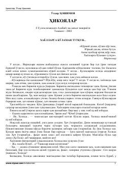

HO'tkir Hoshimovning sevgi va hayot haqidagi qisqa hikoyalari to'plami.
Bu kitob O'zbek adabiyotining taniqli yozuvchisi O'tkir Hoshimovning hikoyalar to'plamidir. Asarlarda yoshlik, sevgi, insoniy his-tuyg'ular va hayotiy voqealar tasvirlanadi. Kitob G'afur G'ulom nomidagi Adabiyot va san'at nashriyotida 2002-yilda Toshkentda chop etilgan.